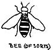
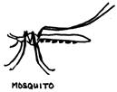
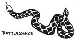

Willamette Bridge
522 W. Burnside
Portland Oregon 97209
The first few pleasant days of spring always bring thousands of pale, moldy humans bursting from their caves to renew an acquaintance with Ma Nature. For most people, this is a relatively nontraumatic experience. But for some - especially the hard-core urbanites and those with short memories - the adventure may be akin to crossing a freeway blindfolded. You have only to spend an idle hour or two in any hospital emergency room on Sunday afternoon from mid-May through August to get an idea of the scope of the problem.
Therefore, we offer some general guides of what to do (or, often, what not to do) when Nature retaliates. Most of this is well covered in any standard first-aid manual, but we will try to condense some of the important information into a few paragraphs. The following is, necessarily, highly selective . . . so if your favorite injury or poisoning is not covered, you are invited to look it up yourself.
FLYING AND CRAWLING THINGS
Bees (including wasps, hornets, yellowjackets, etc.) scare many people half to death but only rarely are their stings really dangerous. For the vast majority, bee stings are painful and sometimes swell quite badly but - once the sting has occurred - there is little or nothing to do. Nothing that you rub or spray on the skin, swallow or say to the bee is going to make much difference.
If a honey bee stings and leaves the stinger sticking in you (which is usually what happens), try to remove it promptly without squeezing the little poison sacs attached to the stinger. That will inject more of the venom and make the sting worse.
Occasionally people faint, and - very unusually - may go into anaphylactic shock (severe shock, convulsions and even death) after a sting. This shock should be treated like any other shock or severe injury: Protect the individual from further injury, keep him warm, provide shade if he is in direct sunlight, help him breathe if necessary and GET HELP.
People who react to stings with very severe swelling or other severe symptoms should take a potent antihistimine immediately upon being stung. For this reason, the antihistimine should, obviously, be carried at all times.
Ticks are found almost everywhere, but - with rare exceptions - they carry disease only in the drier areas like eastern Oregon and Washington, Montana, etc. When people or animals walk through brush, the ticks drop off leaves and burrow into the skin of the victim until only their rear ends stick out. If you try to pull them out they break, leaving part of the tick buried.
The best way to remove ticks is to wave a match or lighted cigarette very close to them. Occasionally, they back out. If not, they can be killed by covering them with mineral oil, alcohol, etc. Once this is done, they can be easily removed . . . sometimes. Often, however, they are stuck so tightly that a chunk of skin has to be removed with them in it. Obviously this should be done, preferably with local anesthesia, by someone who knows what he is doing.
There are rattlesnakes in some areas of the country and, every once in a while, they kill someone. When traveling in those areas, keep your eyes and ears open, watch where you walk, don't reach blindly into holes or under rocks and don't panic. A rattle snake will rattle if it gets the chance and, given an opportunity, will leave. It's non-aggressive by nature. Only if it's trapped or stepped on or otherwise threatened will a rattlesnake strike. And when it does strike, it's only a few feet at most: Usually not much over half its length.
One additional suggestion: Look before you reach into boxes, knapsacks, etc. that have been standing on the ground and don't climb into sleeping bags that have been left unrolled without looking in or shaking them first.
Treatment of a rattlesnake bite must be started promptly. First, put a tourniquet between the bite and the heart and tighten the tourniquet to block the veins, but not the artery. Then make small 1/4 inch-deep cuts through the bite marks and suck out as much blood, serum and poison as possible for 20-30 minutes. Meanwhile, with the tourniquet still in place and being careful to move the bitten part as little as possible, get the victim to medical help.
Actually, all of these first-aid measures are of doubtful value. The real treatment is anti-venom and there should be as little delay as possible in getting it.
There are small leeches in some wilderness streams and ponds. If they get on your skin, gently pick them off.
Scorpions, black widow spiders and brown recluse spiders occur in the southwest, including Southern California. Anyone who goes there by choice deserves what he gets.
Most flies, gnats, fleas, mosquitoes and ants are mainly nuisances. Deer flies, black flies, horse flies and a few others may cause painful bites, but they are not dangerous.
CUTS, SCRAPES AND BURNS
The cardinal rule is: DON'T OVERTREAT. It is possible to turn a minor injury into a major problem in a few minutes with the contents of the average medicine chest and a few well-meaning friends.
For bleeding, put something clean over the wound and press firmly. Don't use tourniquets. If a finger is bleeding, put the hand high overhead and the bleeding will decrease or stop.
Wash dirt from wounds with soap and water if soap is available. If soap is not available, use plain water. Then either leave the wound open (preferably) or cover it with something clean if it is likely to get dirty or bleed and make a mess. Antiseptics are seldom of any value. Alcoholic solutions may further damage newly-injured tissues and it may take thirty painful minutes to remove a congealed mixture of blood and the antiseptic powder that has been dumped on an abrasion or burn.
If wounds are large; if bleeding is persistent and heavy; if wounds need suturing; or if tendons, bones, joints or internal organs may have been injured, GET HELP. This will probably necessitate going to a hospital emergency room.
Suturing of wounds is often desirable to decrease bleeding, speed healing and reduce the size of a scar but it is not necessary for survival. Our ancestors got by for thousands of generations either leaving cuts alone or improvising ways of pulling the edges together. If a wound is wide open and it will be impossible to have it sutured within 24 hours, clean it thoroughly and place strips of tape perpendicular to the cut to pull the edges together. In an emergency this is an adequate substitute for stitches.
In the case of all wounds, particularly dirty or contaminated ones, proper tetanus innoculation is necessary and should be done with a minimum of delay.
Small burns can usually be ignored. Once the burn has occurred, the damage is done and, from then on, healing takes place. Ice, cold water, vaseline or one of the burn ointments will reduce pain.
Larger burns - especially if there is blistering or charring of the skin - probably need special treatment, so GET HELP.
Sunburn is surprisingly easy to acquire and its seriousness tends to be underrated. After a long, dark winter it doesn't take long to get a bad first degree burn - especially on water, snow or sand where there is the additional factor of reflection. A few hours of exposure can lead to blistering of the skin, vomiting, shock and high fever.
Mild to moderate sunburn is treated with nothing or with one of the commercially available sunburn lotions. More severe burns - especially with such systemic symptoms as fever, vomiting or signs of shock - require special care and, probably, hospitalization. GET HELP.
SOMETHING IN THE EYE
If it flew in, blew in or fell in, the foreign object probably is not embedded and can be removed by someone else with a little patience. Don't be afraid to try. Use the rolled corner of a piece of clean, soft cloth or tissue to lift it out.
If the foreign object entered the eye with some force, it might be embedded. If it cannot be lifted out easily, leave it alone and GET HELP.
More severe eye injuries - especially if there is bleeding or fluid leaking from the eye - obviously need immediate help. In no case should the eye be rubbed or pressed. The best protection for an injured eye is to keep the lid closed gently until help can be found.
Irritating liquids, acids, alkalis (lye), gasoline, solvents, etc. should be washed out thoroughly and immediately with large amounts of water. The eye should then be examined.
WILDLIFE
No healthy wild animal will sit or lie still and allow a human to approach, touch or pick it up. If the animal is injured, it may suddenly bite or scratch when touched. An animal that seems sick, weak or crippled may have rabies. If disturbed, it will likely bite and transmit its disease.
Treatment of rabies is a prolonged, uncomfortable and expensive process with less than perfect results. Untreated rabies is always fatal. So leave all the cute little mice, squirrels, 'possums, bats, etc. strictly alone.
If you do get bitten, try to capture and keep the animal alive. Consult a physician or the nearest health department as soon as possible. This includes bites by stray dogs and cats, too.
PREVENTION
Try to learn in advance about the area you plan to visit. You may need boots or heavy shoes for walking in rocks; long sleeves and trousers if you will be in brush or the sun for along time; and warm clothing at night in some places . . . even in the summer.
You may need to carry water, since it is better to assume that all ground water (streams and ponds) in habitated areas are polluted and contaminated.
If you will be where you may be cut, burned or otherwise hurt, make up your own first-aid kit stocked with clean pieces of cloth for simple dressings, some gauze and tape and ajar or tube of vaseline or burn ointment.
If you are going into some areas of the west, it may be advisable to be vaccinated against Rocky Mountain Spotted Fever. Find out from the Health Department before you go.
Keep tetanus immunization up to date: A booster every five years to age 12, then every ten years.
If you react violently to bee stings either stay home or carry an antihistimine and take it - and your chances - if stung.
There is no preventative for poison oak or nettles: Just learn to recognize and avoid them.
|
 |
 |
 |